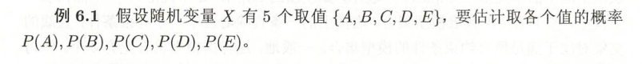
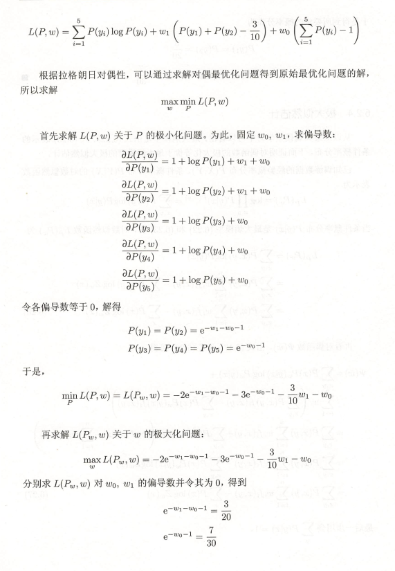
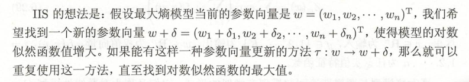

最大熵原理以及最大熵模型
最大熵原理(Maxent principle)
最大熵原理是概率模型学习的一个准则。
书中通过一个例子来介绍最大熵原理，下面引用一下文献中关于这个例子的总结。
Model all that is known and assume nothing about that which is unknown. In other words, given a collection of facts, choose a model which is consistent with all the facts, but otherwise as uniform as possible.
— Berger, 1996
书中关于这部分的总结如下：满足约束条件下求等概率的方法估计概率分布
关于最大熵原理有很多直观容易理解的解释，比如Berger的例子，比如吴军老师数学之美中的例子。
最大熵原理很常见，很多原理我们都一直在用，只是没有上升到理论的高度。
等概率表示了对事实的无知，因为没有更多的信息，这种判断是合理的。
最大熵原理认为要选择的概率模型首先必须满足已有的事实，即约束条件
最大熵原理根据已有的信息（约束条件），选择适当的概率模型。
最大熵原理认为不确定的部分都是等可能的，通过熵的最大化来表示等可能性。
最大熵的原则，承认已有的，且对未知无偏
最大熵原理并不直接关心特征选择，但是特征选择是非常重要的，因为约束可能是成千上万的。
最大熵原理几何解释
这部分书中只描述了模型空间$\mathcal P$，两个约束$C_1$和$C_2$是一致性约束的情况。
在Berger 1996里面有展开这部分，分了四个图，分别讨论了
概率模型空间$\mathcal {P}$$
单一约束$C_1$
- 一致性(consistent)约束$C_1$和$C_2$，这种情况下模型唯一确定$p=C_1\bigcap C_2$
- 非一致性(inconsistent)约束$C_1$和$C_3$，这种情况下没有满足约束条件的模型。
模型
约束条件
假设分类模型是一个条件概率分布，$P(Y|X)$, $X\in \mathcal {X} \sube \mathbf R^n$
给定一个训练集 $T=\{(x_1, y_1), (x_2, y_2), \dots, (x_N, y_N)\}$$
上面两个就是不同的数据样本，在训练数据集中的比例。
特征函数
$f(x,y)=\begin{cases}
1 & ifx与y满足某种特定关系\\
0 & otherwise
\end{cases}$$
如果增加$n$个特征函数, 就可以增加$n$个约束条件，特征也对应增加了一列。
假设满足所有约束条件的模型集合为
定义在条件概率分布$P(Y|X)$上的条件熵为
则模型集合$\cal {C}$$
中条件熵$H(P)$最大的模型称为最大熵模型，上式中对数为自然对数。
特征函数$f(x,y)$关于经验分布$\widetilde P (X, Y)$的期望值用$E_{\widetilde P}(f)$表示
如果模型能够获取训练数据中的信息，那么就有
书上利用了拉格朗日乘子把有约束极值转化为了无约束极值。
另外可以证明该方法求解出来的值即为最大化模型的极大似然估计。
也就是说我们的得到的最大熵模型为:
可以通过例6.2 来理解最大熵模型学习的过程，例6.2 考虑了两种约束条件，这部分内容可以通过python符号推导实现，下面代码整理整个求解过程。
例6.2


一个约束条件
from sympy import *
# 1 constrains
P1, P2, P3, P4, P5, w0, w1, w2 = symbols("P1, P2, P3, P4, P5, w0, w1, w2", real=True)
L = P1 * log(P1) + P2 * log(P2) + P3 * log(P3) + P4 * log(P4) + P5 * log(P5) \
+ w0 * (P1 + P2 + P3 + P4 + P5 - 1)
P1_e = (solve(diff(L, P1), P1))[0]
P2_e = (solve(diff(L, P2), P2))[0]
P3_e = (solve(diff(L, P3), P3))[0]
P4_e = (solve(diff(L, P4), P4))[0]
P5_e = (solve(diff(L, P5), P5))[0]
L = L.subs({P1: P1_e, P2: P2_e, P3: P3_e, P4: P4_e, P5: P5_e})
w = (solve([diff(L, w0)], [w0]))[0]
P = [P1_e.subs({w0: w[0]}),
P2_e.subs({w0: w[0]}),
P3_e.subs({w0: w[0]}),
P4_e.subs({w0: w[0]}),
P5_e.subs({w0: w[0]})]
P两个约束条件
# 2 constrains
P1, P2, P3, P4, P5, w0, w1, w2 = symbols("P1, P2, P3, P4, P5, w0, w1, w2",real=True)
L = P1*log(P1) + P2*log(P2)+P3*log(P3)+P4*log(P4)+P5*log(P5)\
+w1*(P1+P2-3/10)\
+w0*(P1+P2+P3+P4+P5-1)
P1_e = (solve(diff(L,P1),P1))[0]
P2_e = (solve(diff(L,P2),P2))[0]
P3_e = (solve(diff(L,P3),P3))[0]
P4_e = (solve(diff(L,P4),P4))[0]
P5_e = (solve(diff(L,P5),P5))[0]
L = L.subs({P1:P1_e, P2:P2_e, P3:P3_e, P4:P4_e, P5:P5_e})
w = (solve([diff(L,w1),diff(L,w0)],[w0,w1]))[0]
P = [P1_e.subs({w0:w[0], w1:w[1]}),
P2_e.subs({w0:w[0], w1:w[1]}),
P3_e.subs({w0:w[0], w1:w[1]}),
P4_e.subs({w0:w[0], w1:w[1]}),
P5_e.subs({w0:w[0], w1:w[1]})]
P三个约束条件
# 3 constrains
P1, P2, P3, P4, P5, w0, w1, w2 = symbols("P1, P2, P3, P4, P5, w0, w1, w2",real=True)
L = P1*log(P1) + P2*log(P2)+P3*log(P3)+P4*log(P4)+P5*log(P5)\
+w2*(P1+P3-1/2)\
+w1*(P1+P2-3/10)\
+w0*(P1+P2+P3+P4+P5-1)
P1_e = (solve(diff(L,P1),P1))[0]
P2_e = (solve(diff(L,P2),P2))[0]
P3_e = (solve(diff(L,P3),P3))[0]
P4_e = (solve(diff(L,P4),P4))[0]
P5_e = (solve(diff(L,P5),P5))[0]
L = L.subs({P1:P1_e, P2:P2_e, P3:P3_e, P4:P4_e, P5:P5_e})
w = (solve([diff(L,w2),diff(L,w1),diff(L,w0)],[w0,w1,w2]))[0]
P = [P1_e.subs({w0:w[0], w1:w[1],w2:w[2]}),
P2_e.subs({w0:w[0], w1:w[1],w2:w[2]}),
P3_e.subs({w0:w[0], w1:w[1],w2:w[2]}),
P4_e.subs({w0:w[0], w1:w[1],w2:w[2]}),
P5_e.subs({w0:w[0], w1:w[1],w2:w[2]})]
P模型学习
逻辑斯谛回归模型和最大熵模型学习归结为以似然函数为目标函数的最优化问题，通常通过迭代算法求解。
目标函数
逻辑斯谛回归模型
最大熵模型

改进的迭代尺度法（IIS）
改进的迭代尺度法(improved iterative scaling,IIS)是一种最大熵模型学习的最优化算法。

拟牛顿法
代码实现
关于代码实现，网上看似众多的版本，应该基本上都源自最早15年的一份GIS的程序。
无论怎样，这些代码的实现，都会有助于对Maxent的理解。推荐后面参考文献[1]
李航老师在本章给出的参考文献中[1, 2]是Berger的文章。
Demo
这部分代码没有LR的说明。
代码来源: https://vimsky.com/article/776.html
相关公式: https://vimsky.com/article/714.html
提几点:
- 代码参考文献可以看berger的文章，公式编号基本对应。
- 这份代码用defaultdict实现了稀疏存储。
- 如果$f(x, y)$只是判断$(x, y)$在特征中出现的指示函数，那么特征可以简单的表示为$(x, y)$，这样给定一份含有标签的数据集，特征的数量就是 $m \times n$ 其中$m$是标签的数量，$n$是词表大小。注意书中注释过，$f(x,y)$可以是任意实值函数。
- 这份代码思路很清晰，$(E_{\widetilde p}, Z_x \Rightarrow P(y|x) \Rightarrow E_p) \Rightarrow \delta $，具体参考书中公式6.22，6.23，6.34
- 体会一下在做直方图的时候，对于同一个样本，同样的特征出现多次的贡献是一样的。
- 在未知的情况下，输出结果等概率。
Maxent
参考链接: https://github.com/WenDesi/lihang_book_algorithm/tree/master/maxENT
本来是想在这个代码的基础上更改，但是代码分解的不是非常容易理解。改来改去基本上面目全非了。保留链接以示感谢。博主写了一系列代码，至少有个成体系的参考。
提几点:
没有用稀疏存储，所以，矩阵中会有很多零。需要除零错误处理
分子分母都是0对应nan，分母为0对应infwith np.errstate(divide='ignore', invalid='ignore'): tmp = np.true_divide(self.EPxy, self.EPx) tmp[tmp == np.inf] = 0 tmp = np.nan_to_num(tmp)尝试了三种数据，可以通过命令行参数实现数据选择。
- Demo中用到的data
- train_binary.csv 这份数据的来源是参考链接中的，只考虑了0，1两种数据，标签少。
- sklearn中的digits，标签全，但是8x8大小，比mnist少。其实8x8也不是一个非常小的图了，因为数字相对简单一点，用OpenCV做级联分类器的训练的时候，建议的图片大小是20x20，或者40x40，或者60x60不要太大
- 书中有一个地方还是不理解的，提到了$f^#$是不是常数的问题。
- 没有采用字典的方式实现稀疏存储，但是numpy的数组操作还是很便捷的，后面有空评估一下存储和计算资源的消耗情况。
- 大多数算法都是在刷权重，考虑哪些量(特征)可以用，哪些方法(算法)可以让权重刷的更合理，哪些方法(优化方法)能刷的更快。
Mnist
有同学问LR实现中的GD，才发现那段代码不是很好读。而且，用到的train.csv已不在。
加了一个mnist_sample.py从Lecun那里下载数据，并按照类别采样300条。用来完成LR的Demo。
有些程序的问题，配合数据来理解。通常用到label乘法都是利用了label的符号，或者one-hot之后为了取到对应的类别的值。
代码更新了下，建议运行logistic_regression.py的时候在注释的位置断点，看下各个数据的shape，希望对理解代码有帮助。